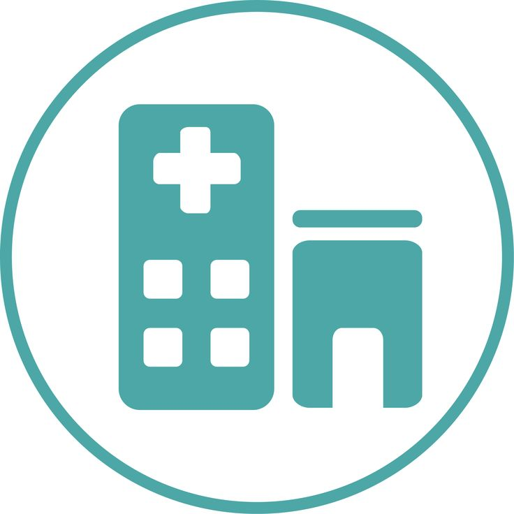

| PLACES OF INTEREST
-

| IN THE HOSPITAL
Gift Shop
A Gift Shop is located on Level LG of Normah Hospital, adjacent to the Cafeteria. Its opening hours are Monday to Friday (8:30 am to 4:30 pm) and Saturday (8:00 am to 1:30 pm.) It is closed on Sundays.
The shop sells a wide variety of essential items including gifts, flowers, toiletries, stationary, confectioneries, books and magazines.
Newspaper can be delivered to the rooms on request.
Cafeteria
The Cafeteria is located at Level LG, Normah Hospital adjacent to the lift lobby. It is open 7 days a week from 7:00 am to 9:00 pm. You can have a choice of Western or local cuisine. Room Service is available for in-patients. In patients will be served complimentary 3 meals a day (breakfast, lunch and dinner). Menus are available in every room. Special meals for patients on special diet (example diabetics) can be arranged. The resident Dietitian can also help with dietary advice. Meals can be charged to your account during your stay in Normah. All food served is halal.
 | SURROUNDING AREA
| SURROUNDING AREA
Arc Maps